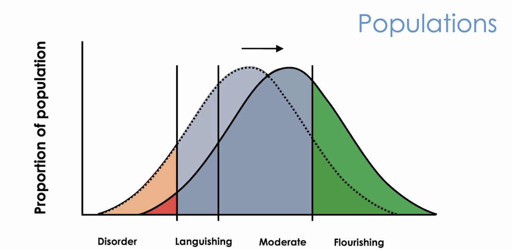
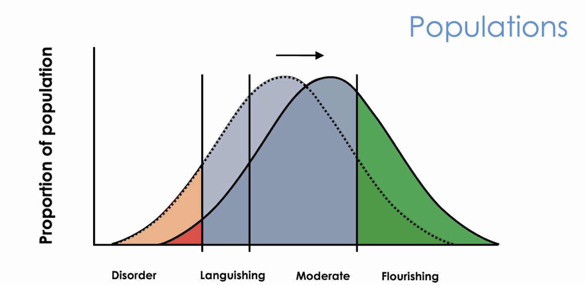
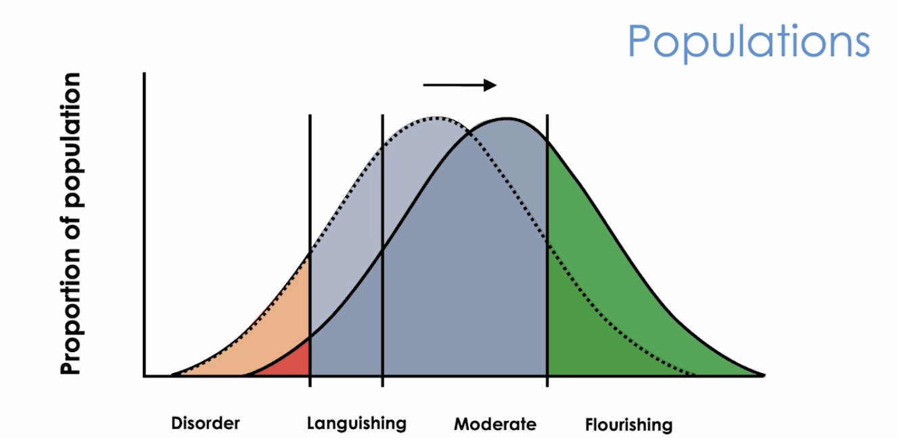

Materials taken from the class Foundations of Behavioral Science, taught by Dr. Kai Ruggeri.
Classical Economic Theory
1.2-1.5 Classical economic theory
Five fundamental assumptions of classical economic theory:
individuals are rational (homo economicus): we'll always make the best decisions.
expected utility theory: people will calculate the expected utility of each option and choose the one
with the highest utility.
money is fungible, perceived utility is marginal: certain things have certain values, i.e., 100 one
dollar bills is the same as 1 a hundred dollar bill. Perceived utility might not align with the real
value, and only increase marginally.
markets are driven by supply and demand, and regulation.
growth is the net result of a market, and thus is the best indicator of survival.
Behavioral science is going to argue that these assumptions are not adequate to explain human decision making in
real life.
Rationality
Rationality: people will choose the best outcomes.
But what does it mean to be best? maximize (regardless of cost, e.g. chess, you just want to win) and optimize
(lowest cost possible, e.g., shopping, you want to get the best deal).
Rational choice theory: when people are given choices, they will choose the one that looks the best overall.
Expected value and expected utility
Taking risks and uncertainty into consideration.
The expected value of a choice really depends on the context and how people perceive the value.
1.6 Deviations from classical economic theory
Heuristics: mental shortcuts that people use to make decisions quickly, aka, biases. Bounded rationality: there's a limit on how much mental capacity we have to make decisions.
Because of bounded rationality, people will use heuristics to make decisions, which might not be optimal. That's
also why people are usually short-sighted and hate uncertainty.
Foundation of Behavioral Sciences
2.1 Prospect theory
Loss aversion: we prefer certainty when it comes to gains, but are more willing to take risks when it
comes to losses.
What does this mean? Winning and losing 10 dollars doesn't feel the same.
This is against the principle of fungible money in classical economic theory.
This shows us, framing matters.
For the same thing, if you frame it differently, people will react differently.
e.g., most people will agree to help low-income students, but if you're asked to pay higher taxes to help them,
most people say no. My thinking: Is this because people are "selfish"? Is loss aversion related to the "selfishness" of people?
or vice versa, is "selfishness" rooted from the fact that we are loss averse?
Prospect theory: as gains go up, we less and less like risks. But when it comes to losing, we hate losing
so much that we're willing to take chances.
This is a deviation from the expected utility theory in classical economic theory.
This affects everyone of us. No one is immune from this. It has been tested many times and it always shows
consistent patterns.
Choice architecture
When we make decisions, there are many noises. Sometimes the environment is architectured to influence the way
we make choices. Examples are nudges.
2.3 Nudges
Temperal discounting: today is more valuable than tomorrow. This is also known as present bias.
This exists everywhere around the world, with different intensities. Westerners seem to be more affected than
the rest of the world. Mental accounting: people set up "accounts" in their minds for different purposes, and treat money
differently based on which "account" it belongs to.
For example, people will refuse to pay a $10 mug if they budget $5 for a mug, but they will pay $40100 for a car
if they budget $40000 for a car.
In fact they pay $100 more in the car case, which is more than the $5 over budget in the mug case.
Nudges
Nudges: small changes in the environment that can influence people's behavior in a predictable way
without forcing them.
Some people argue there is no core theory supporting nudges, and some worry about the ethics of nudging people.
Financial penalities ARE NOT NUDGES. Nudges are not mandates. Boomerang effect: nudges result in positive changes for some people, but negative changes for others.
For example, if you tell people that their energy consumption is higher than their neighbors', some people will
reduce their consumption, but some people will increase their consumption to match their neighbors'.
Examples of nudges:
Keep unhealthy food out of sight in cafeterias to promote healthier eating habits.
Automatically enrolling employees into retirement savings plans to increase participation rates.
This study shows that people are more likely to stick to the default option.
People use much less energy when they know the average usage of their neighbors.
This study shows that people tend to align with the average group behavior. (Ciadini) This means,
people doing better than the average will reduce their performance to match the average, and people
doing worse than the average will increase their performance to match the average.
Caution: it might be hard to sustain this effect over time.
Choosing insurance in a two step process: first eliminate some options, then pick from a smaller
group.
Splitting the decision architecture into a longer process, including assigning offers to a variety of
categories and presenting them as smaller groups resulted in being easier to process by participants,
and thus easier to make appropriate decisions.
Behavioral Policy
3.1-3.2 Policy
Policy vs law: the dos and do-nots
The law punishes negative things, whereas policy tries to promote the best outcomes, or prevent bad things from
happening.
When we talk about policy, we're talking about population level interventions that focus on everyone, not just a
few or a specific group.

In tradtional policy, we focus on the "disorder" group and we try to bring that group of people to
"languishiing" or "moderate", but the problem is that, there are people from these groups falling to "disorder"
at the same time, so we're not improving.
In behavioral science, we try to shift the whole group to the right.
Policy cycles: diagnose, design, test, implement, evaluate policy.
This might be an over-simplified version of how policy are actually carried out. Change the population: this means the shift in the curve.
3.3-3.6 Rose hypothesis
Rose hypothesis insists that the policy needs to shift the whole population, because:
average is not the most accurate measure of group behavior
different groups are exposed to different risk conditions, education levels, etc.
genetics can also play a role
Rose hypothesis is very hard to realize in the real life. Only two examples.
Applications of Rose hypothesis
UK tax system: shows that social norms can be powerful influencers.
Before: if you don't pay tax, you'll be fined this much --> not very effective.
After: do you know people in the same community and earn this much have paid their taxes? --> much more
effective.
Philippine saving accounts: tries to close the value action gap.
The gap is that people know they should save, but they don't do it.
Solution: they asked people to sign a commitment contract to save a certain amount of money every month
with themselves.
Why does this work? This is to deal with the present bias. We need to make people see there's a benefit
NOW even though we're saving for the future.
Is charging people a small fee always a good idea? Maybe, maybe not.
In Isreal, schools penalize parents who pick up their kids late, but later found this backfired because
the parents consider the penalties extra fees paid to take care of their kids.
But in the UK, charging customers for shopping bag has been very effective in reducing shopping bag
usage.
Then again, when the US introduced this policy for shopping bag, it didn't work.
Pay attention: only charging small fees count as nudges.
3.7 Effective communication strategies
Several principles for effective communication:
Personalization: implement interventions customized to fit individual characteristics or
preferences, e.g., different ads for the same product. But this also raises concerns about personal data
collection and usage.
Temperal discounting: people conceive the same thing differently at different times.
Framing: same thing presented differently can have different responses, e.g., using social norms
to persuade people.
Participation: provide people the opportunity to take part in different forms of decision-making.
Opeartional transparency: reveal the hidden work that the government performs. This is proved to
increase trust.
Simplicity: the easier people find it to understand the policy, the more likely they are going to
carry it out correctly. But be careful not to oversimplify things.
Salience: make it catchy and easily memorable, by using highlight, colors, visuals, etc.
Behavioral Science and Healthcare
This module is about behaviors in healthcare context, in clinic or outside.
The focus is not each intervention, but the marginal shifts, e.g., a few more minutes of exercise, a few more
fruits and veggies, etc.
Don't think of this as healthcare, but broadly about health. We focus not only on treatment, but the overall
wellbeing.
Types of healthcare policies:
preference based: provide people with more choices so that they can make the best decision for them.
One example is presenting all available insurance options to people so that they can choose the best
one for them.
information based: provide people with health information. e.g., on cigerette packs tell them smoking is
bad for your health.
financial incentives: e.g., give people money if they can lose weight
regulation policies: usually in the form of taxes and subsidies. e.g., soda tax or fat tax on unhealthy
drinks.
nudges
Policies target three levels:
treatment: targeting the treatment of known issues; target affected people
prevention: preventing issues from occurring; target at-risk people
promotion: improving the overall status of a population; target general population
4.3 Participation
Participation principle: have the people affected by the policy participate in the design of the policy.
This can 1) increase the buy-in of the policy, and 2) make the policy more effective since the people affected
by the policy are the ones who know the most about the problem and the potential solutions.
Participation is considered highly ethical, but it can be costly to implement.
4.4 Defaults
When you provide people with options, different options have different appeal.
Take vaccines as an example, there are four ways to present the options. Ranking from least to most effective:
opt in: you need to actively choose to get the vaccine.
active choice: you are presented with a choice either to get the vaccine or not.
opt out: you are automatically enrolled in the vaccine program, unless you choose to opt out.
enhanced active choice: do you want to get a reminder when it's time for your vaccine? It assumes people
do want to get the vaccine, and the option is to provide a convenience.
There is also defaults for organ donation. In some countries, you need to actively choose to donate your organs,
in other countries, you are opted in by default, and need to actively choose to opt out.
Organ donation, however, is a more complicated issue. Even though donations will help save lives, most
behavioral scientists are against the idea of opt out due to many reasons.
Reciprocity is proved to be the most effective way to increase organ donation. e.g., ask people, if you were in
need of an organ, would you want a stranger to donate their organs to you?
4.5 Salience and Nudges
In the world of healthcare, even the most experienced can make mistakes due to the complexity of the system.
One application is to use checklist to "nudge" the doctors to do the right thing.
For example, the doctor might ask you over and over the same question to confirm things.
This is also an example of salience: repeating the same question makes it more salient, and thus harder to
forget.
Salience vs simplicity: salience makes it easier to find information, simplicity makes it easier to execute.
4.6 Incentives
One example of using incentives is to award monetary bonuses to people.
For example, money was given to people to pick up their HIV result. Paying a small fee encouraged more people to
pick
up their results. However, is it effective in the long term?
The answer is unfortunately no. Even though people pick up their result, they don't necessarily change their
behavior.
This shows that incentives by themselves might not be enough to have long term effects.
This is also seen elsewhere. For example, giving people money to urge them to go to gym, doesn't work in the
long run either.
This is known as the ostrich problem.
4.7 Norms
One problem is overprescription. For example, antibiotics are prescribed for viral infections, or for other
stuff that are not bacterial in nature.
In order to address overprescription, a clinic starts to show the doctors how many antibiotics are prescribed
compared to the average of other doctors.
This is an example of using norms to nudge the doctors to change their behavior. But there are some concerns
associated with this method as well, e.g., is this interfering doctor-patient relationship?
Challenges in Behavioral Science
5.2-5.4 Using Money as Incentives
In classical economic theory, supply and demand is what drives everything, thus money plays a big role.
But in behavioral science, money is not everything. Adding a financial penalty or reward is not always the
best way to change behavior.
Sometimes they just don't work. They might either backfire immediately, or work in the short term but fail in
the long term.
The Czech Republic example: they tried to prevent people from overusing the healthcare system by
imposing a small fee if you visit more than a certain number of times in a year. But that did not work.
The Philadelphia example: they tried to encourage people to take FREE shared ride to primary care
appointments,but that did not work either.
The conclusion is simple, money doesn't solve everything.
Takeaways
Term
What is it
Availability
Relying on immediate examples that come to mind when evaluating a situation or decision.
Salience
The quality of being noticeable or important, influencing focus and decision-making.
Framing
Presenting information in a way that influences perception and interpretation of choices.
Temporal discounting
The tendency to value immediate rewards more highly than future rewards.
Social norms
Accepted behaviors and expectations within a group that influence individual actions and decisions.
Loss aversion
The tendency to prefer avoiding losses to acquiring equivalent gains.
Defaults
Preset options that people tend to accept unless they actively choose otherwise.
Decision aids
Tools designed to help individuals make informed choices by simplifying complex information.
Personalization
Tailoring messages or options to individual preferences to enhance relevance and engagement.
Simplification
Reducing complexity in choices to make decision-making easier and more effective.
Reciprocity
The social norm of responding to positive actions with corresponding positive actions.
Windfall effects
Changes in spending behavior resulting from unexpected gains or financial surprises.
Endowment effects
Valuing an item more highly simply because one owns it.
Present bias
Favoring immediate rewards over future benefits, leading to short-term decision-making.
Anchoring
Relying heavily on the first piece of information encountered when making decisions.
Coat-tailing
Benefiting from the popularity or success of another individual or entity in decision-making
contexts.
 
